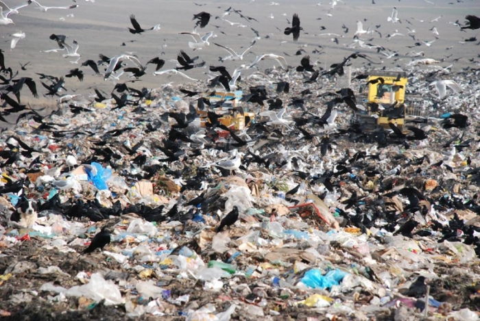
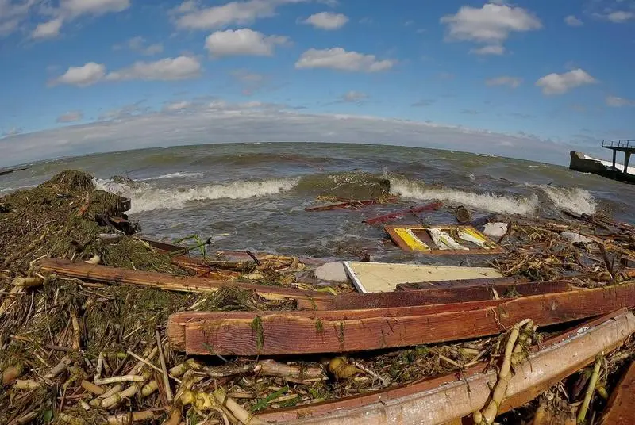
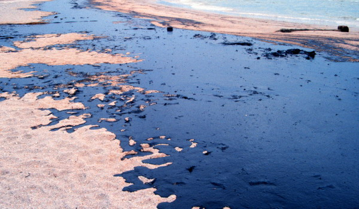
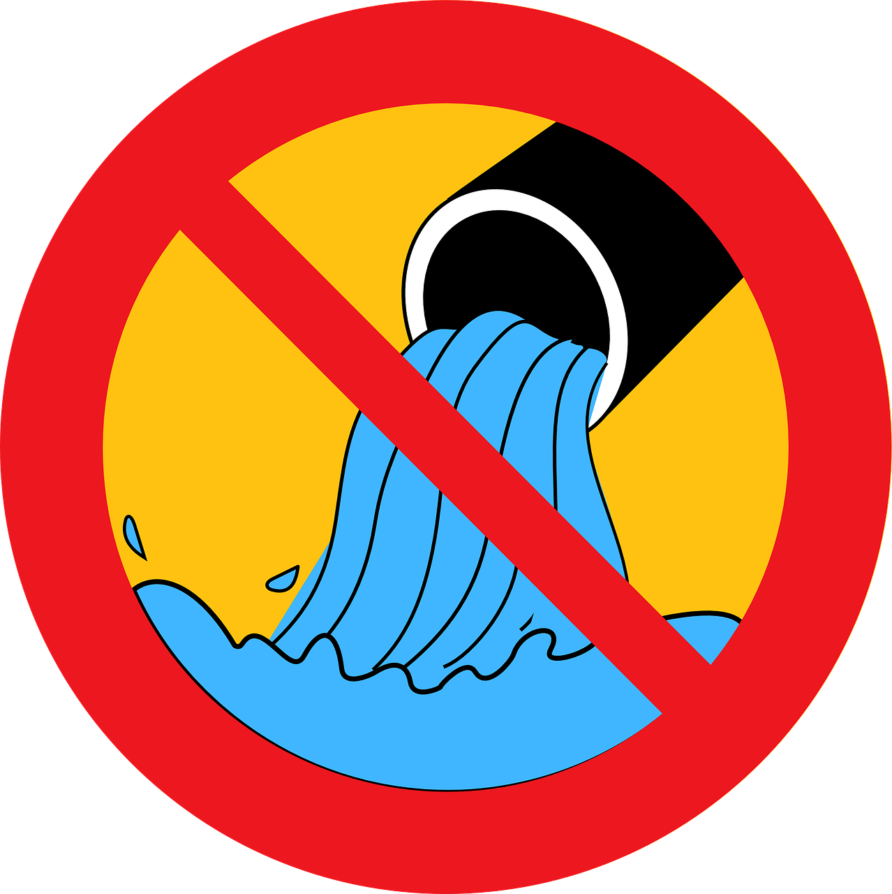
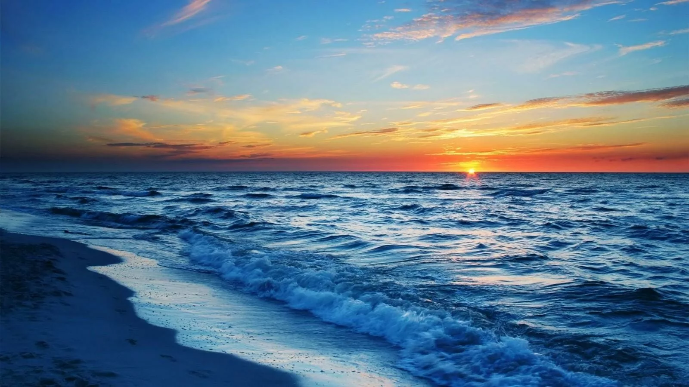
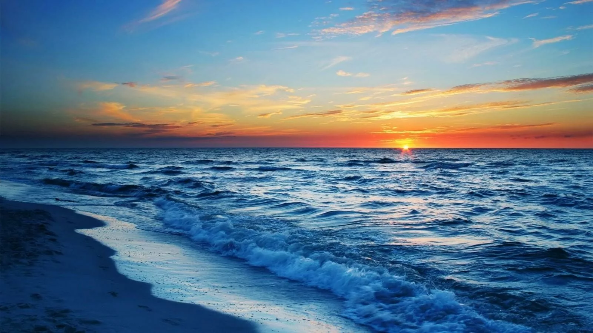
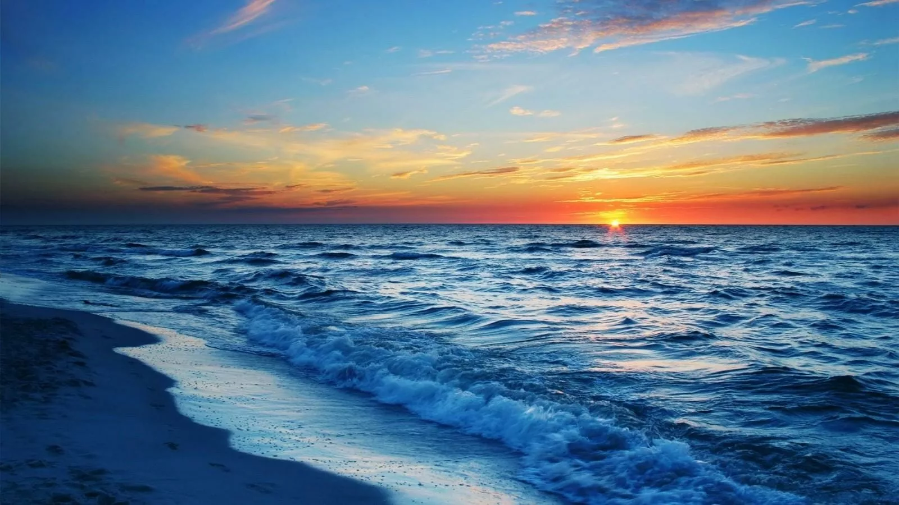

Probleme Ecologice și Conservare
Marea Neagră este un ecosistem fragil, afectat de numeroase probleme ecologice care pun în pericol biodiversitatea sa
În ultimele decenii, activitățile umane au avut un impact negativ asupra calității apei și a speciilor marine, ceea ce face ca măsurile de conservare să fie din ce în ce mai necesare.
Printre cele mai mari amenințări se numără poluarea, pescuitul excesiv și schimbările climatice, fiecare având efecte grave asupra echilibrului natural al mării.
În ultimele decenii, activitățile umane au avut un impact negativ asupra calității apei și a speciilor marine, ceea ce face ca măsurile de conservare să fie din ce în ce mai necesare.
Printre cele mai mari amenințări se numără poluarea, pescuitul excesiv și schimbările climatice, fiecare având efecte grave asupra echilibrului natural al mării.
•Poluarea: o amenințare majoră
Poluarea reprezintă una dintre cele mai grave probleme cu care se confruntă Marea Neagră, având multiple surse și efecte negative asupra ecosistemului:
- Deșeurile din plastic
- Milioane de tone de plastic ajung anual în Marea Neagră, afectând atât speciile marine, cât și calitatea apei. Pungi, sticle și microplastice sunt ingerate de pești și mamifere marine, punându-le viața în pericol.
- Substanțele chimice și metalele grele
- Apele uzate provenite din industrie și agricultură conțin substanțe toxice, cum ar fi nitrați, fosfați și metale grele, care afectează sănătatea ecosistemului. Acestea duc la proliferarea algelor toxice și la scăderea oxigenului din apă, ceea ce provoacă moartea unor specii marine.
- Poluarea cu petrol
- Scurgerile accidentale de petrol și deversările ilegale afectează grav flora și fauna Mării Negre, contaminând plajele și distrugând habitatele naturale.



•Pescuitul excesiv și impactul asupra speciilor marine
Pescuitul intens și nereglementat a dus la scăderea alarmantă a unor specii esențiale pentru ecosistem.
- Sturionii, amenințați cu dispariția:
- Aceste specii valoroase, renumite pentru icrele negre, au fost supraexploatate, iar populațiile lor au scăzut dramatic. În prezent, pescuitul sturionilor este interzis în multe țări, dar braconajul continuă să fie o problemă gravă.
- Reducerea populațiilor de pești comerciali:
- Specii precum hamsia, stavridul și scrumbia de Dunăre sunt pescuite în cantități mari, adesea fără respectarea cotelor de captură, ceea ce afectează regenerarea populațiilor.
- Capturarea accidentală a mamiferelor marine:
- Delfinii și marsuinii sunt prinși frecvent în plasele de pescuit, ceea ce duce la moartea acestora.
•Schimbările climatice și efectele lor asupra Mării Negre
Creșterea temperaturilor și modificările climatice globale au început să afecteze serios ecosistemul Mării Negre.
- Încălzirea apei:
- Temperaturile mai ridicate influențează comportamentul speciilor marine, modificând rutele de migrație și afectând echilibrul ecosistemului.
- Acidificarea oceanelor:
- Creșterea concentrației de CO₂ în atmosferă determină o acidificare a apei, afectând organismele marine, în special moluștele și coralii.
- Fenomene meteorologice extreme:
- Creșterea nivelului mării și furtunile mai frecvente pot afecta zonele costiere, distrugând habitatele naturale și punând în pericol biodiversitatea..
•Măsuri de conservare și protecție
Pentru a proteja Marea Neagră și speciile sale, sunt necesare măsuri eficiente de conservare și politici de mediu stricte.
- Reglementarea pescuitului:
- Implementarea unor reguli stricte privind pescuitul și monitorizarea capturilor contribuie la menținerea echilibrului ecosistemului.
- Crearea și extinderea ariilor protejate:
- Zonele marine protejate ajută la refacerea habitatelor naturale și la conservarea speciilor amenințate.
- Reducerea poluării:
- Campaniile de ecologizare, promovarea reciclării și reducerea utilizării plasticului sunt soluții esențiale pentru protejarea Mării Negre.
- Educația și implicarea comunităților locale:
- Conștientizarea populației și promovarea unor practici sustenabile sunt esențiale pentru conservarea biodiversității.

 


Protejarea Mării Negre este o responsabilitate comună, iar fiecare dintre noi poate contribui la menținerea echilibrului acestui ecosistem unic.